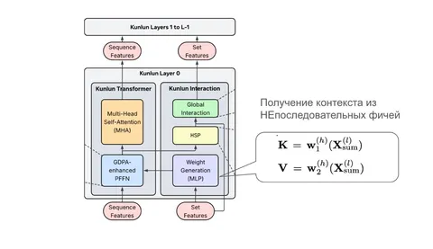
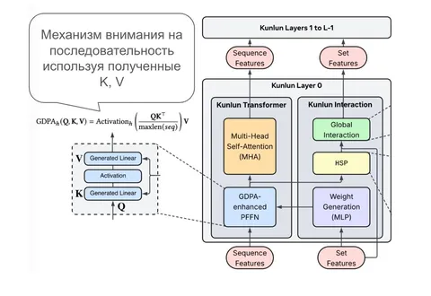
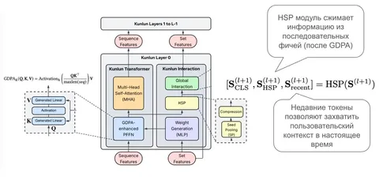
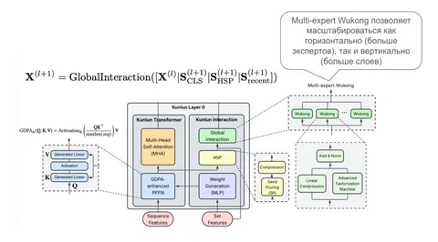
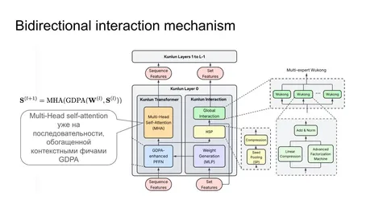
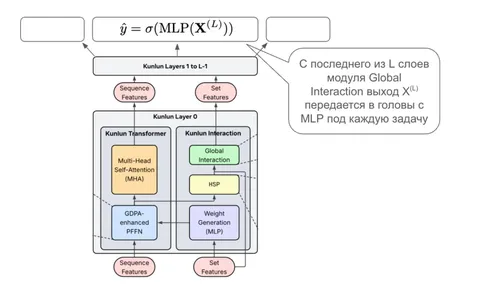

Продолжаем разбор статьи Kunlun — переходим к архитектуре и масштабированию.
Авторы высокоуровнево выделяют в модели два блока:
- Kunlun Transformer Block — отвечает за обработку истории с учётом контекста.
- Kunlun Interaction Block — отвечает за обмен информацией между последовательными и непоследовательными признаками.
Рассмотрим подробнее один слой модели, чтобы понять, как достигается взаимодействие между фичами различной природы.
1) Из контекстных фичей получаются матрицы K и V, которые потом используют для извлечения информации из последовательности благодаря cross-attention. Авторы рассматривают это как обогащение истории пользователя контекстом/персонализацией. Ребята значимо поработали над low-level-оптимизациями, перенеся их из FlashAttention, благодаря чему ускорили этот блок в шесть раз по сравнению с Interformer.
2) GDPA — Generalized Dot Product Attention. Последовательность событий преобразуют в Q, с которой «смотрят» на полученные K, V с предыдущего шага.
3) Hierarchical Seed Pooling (HSP) — замена традиционному PMA (Pooling by Multihead Attention). Смысл — донести информацию из истории действий пользователя для взаимодействия с контекстными фичами. Тут тоже применяют трюк, чтоб захватить побольше информации, не усложнив значимо компьют.
4) Multi-expert Wukong — для захвата взаимодействий (в том числе и высоких порядков) между контекстными фичами и историей пользователя
5) Стандартный блок self-attention для последовательности, уже обогащённой контекстом.
6) После заключительного слоя для каждой задачи с его помощью вычисляется MLP-шапка (Multi-Layer Perceptron).
В целом ощущение, что Kunlun — это доведённый до ума Interformer, в котором неэффективные блоки заменили на более GPU-friendly, а также применили трюки из LLM для оптимизации ресурсов: sliding-window attention, чередование блоков с attention по последовательности с блоками взаимодействия/суммаризации по контекстным фичам (computation skip), mixture of experts (необычно, что экспертом выступают wukong-блоки).
Также авторы немного упоминают event-level personalization. У пользователя могут быть последовательности из разных событий, и вес/важность событий разных типов (барабанная дробь!) разная. Поэтому — якобы — для разных последовательностей можно управлять гиперпараметрами:
d — размерность эмбеддингов;
n_heads — количество голов в multi-head attention;
n_tokens — количество токенов, участвующих в взаимодействии с контекстными фичами;
L — количество слоёв;
w — размер окна в sliding window self-attention.
Относительно остальных оптимизаций этот пункт выглядит наименее понятным и объяснённым. С одной стороны, идея довольно простая. С другой — непонятно, как поддерживают разные гиперпараметры для разных событий, поскольку в архитектуре есть завязки на единый размер эмбеддингов и практически все гиперпараметры — ключевые (например, количество слоёв модели). Разве что это фактически разные модели — по одной для каждой последовательности (для кликов, для показов, для конверсий).
Что касается цифр, модель масштабируется примерно в два раза эффективнее бейзлайнов (прирост метрик на одинаковый прирост компьюта стал в два раза выше), использование GPU (MFU) на B200 выросло с 17% до ~37%, а в Meta Ads это дало прирост бизнес-метрик на +1,2%.
@RecSysChannel
Разбор подготовил
___
Компания Meta признана экстремистской; её деятельность в России запрещена.





